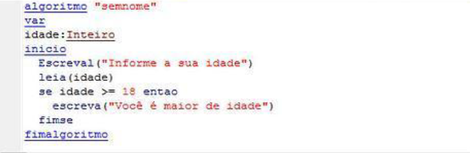
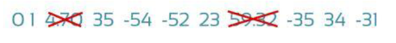
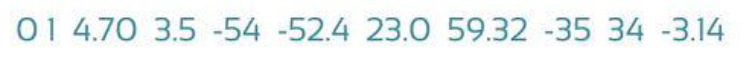
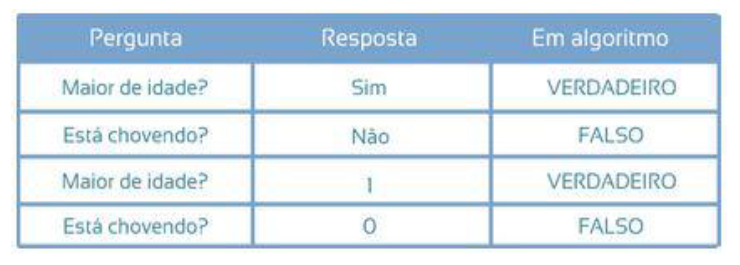

Nada mais é do que uma sequência de instruções utilizadas para solucionar vários problemas do dia a dia. Não é necessarimente um programa de computador, pode ser passos utilizados para realizar uma tarefa. Temos que nos atentar, o algorítmo deve sempre chegar ao resultado final, caso contrário, o mesmo não chegara ao ponto final.
Exemplo de algorítimo do dia a dia:
Tomar café
Os dois tipos mais utilizados são representados por formas que fazem alusão a tomadas de decisões (fluxograma) e por meio de pseudocódigos.
Definido por símbolos, em conjunto com desenhos geométricos que representam os passos do algorítimo, como: início, entrada e saída de dados, tomada de decisões, estruturas de repetição e final do algorítimo.
O pseudocódigo é uma espécie de narração do que o programa deve fazer, é o que intermedia a linguagem falada (humana) para a linguagem de programação (computacional).
Quando criamos um programa computacional, temos que levar em conta quais os tipos de dados que poderão ser inseridos no sistema.
Aceitam somente números inteiros positivos e negativos. Não aceitam números decimais.
Podem ser valores positivos e negativos. Podem ser números decimais e inteiros.
Podem ser letras, números ou caracteres especiais, ou seja, podem ser qualquer tipo de valor. Os valores deste tipo devem estar dentro de aspas duplas ("").
São respostas para uma pergunta, a qual deverá ter apenas duas possíveis respostas: sim ou não. Porém, sempre resultam como VERDADEIRO ou FALSO.
Onde são guardadas os dados necessários para o funcionamento de algum programa. Uma variável guarda um valor informado em uma posição de memória, seu conteúdo pode sempre ser alterado, como o próprio nome já diz "variável". Uma variável só pode ter UM valor dentro dela.